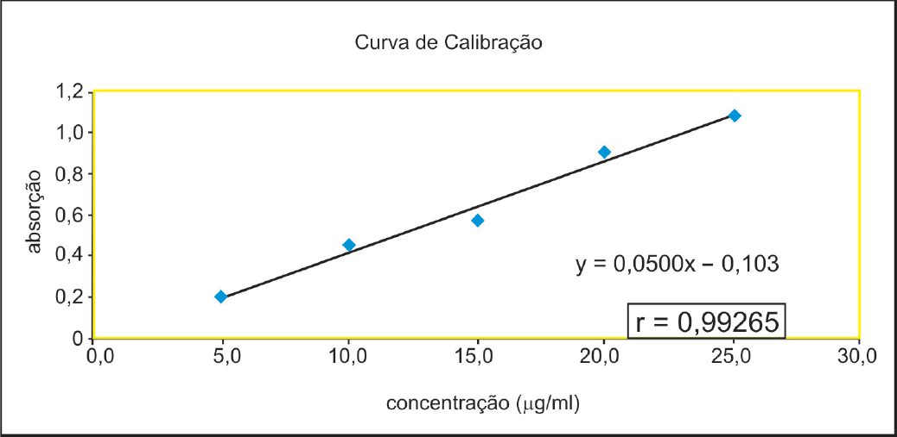

A RDC 67, de 08/10/2007, no item Controle de Qualidade dos Medicamentos Manipulados, diz que: “A farmácia pode manipular e manter estoque mínimo de preparações oficinais (...), desde que garanta a qualidade das preparações”. Desta forma, a Farmácia Joãozinho produz 6.000 cápsulas de minoxidil de 5mg. Seu teor é determinado por espectrofotometria no ultravioleta, utilizando a curva de calibração abaixo, cujo coeficiente de correlação determinado foi r=0,99265. Após uma cápsula ser diluída em balão volumétrico de 100,0ml, deste foi retirada uma alíquota de 3,0ml para balão volumétrico de 10,0ml e, deste último, foi realizada a leitura no espectrofotômetro, obtendo-se 0,602 de absorbância.
Responda às perguntas a seguir, considerando a forma farmacêutica, sua dosagem e a Resolução em vigor.